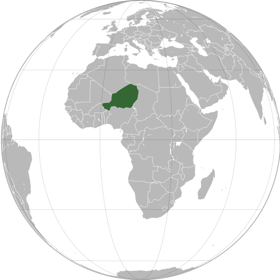

Niger or the Niger, officially the Republic of the Niger, is a landlocked country in West Africa named after the Niger River. Niger is bordered by Libya to the northeast, Chad to the east, Nigeria to the south, Benin to the southwest, Mali to the north-west, Burkina Faso to the south-west, and Algeria to the northwest. Niger covers a land area of almost 1,270,000 km2 (490,000 sq mi), making it the largest country in West Africa. Over 80% of its land area lies in the Sahara Desert. The country's predominantly Muslim population of about 22 million live mostly in clusters in the far south and west of the country. The capital and largest city is Niamey, located in Niger's southwest corner.
